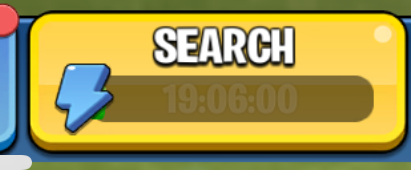

ES-Battlefield Titan and Evil Spirit King
On the ES Battlefield, Lords can summon monsters to attack.
Summoning
When Lords enter the ES Battlefield,
the monsters are not visible. To summon the monsters, Lords need to use the

Monsters
There are 4 type of monsters. When the Lord defeats a monster and returns the obtained Evil Spirit Chest to castle, the Lord receives event points and has a 10% chance to obtain Evil Spirit Items.
| Monster | Power | Event Points | Evil Spirit Item |
|---|---|---|---|
| Orc Warrior | 140B | 100 | Restore 50% Power for all alliance membersAlliance Supply |
| Orc Warrior | 280B | 200 | Increases points for all Alliance members in the Evil Spirit Battlefield by 50% for 60 secondsAlliance Inspiration |
| Cyclops | 560B | 400 | Invalidate the Titan's immunity skill for 60 secondsCounter Holy Sword |
| Lava Behemoth | 1120B | 800 | Invalidates the King’s healing skill for 60 secondsSuppressing Holy Water |